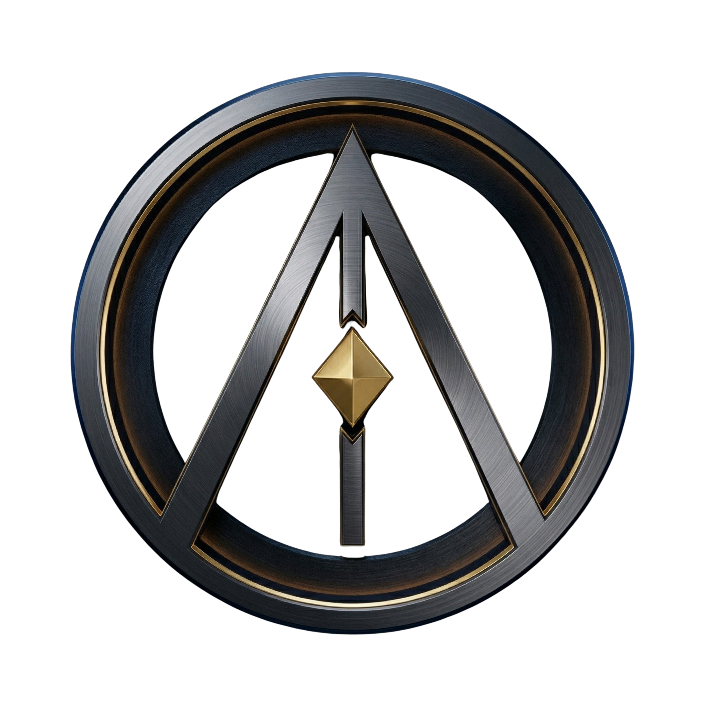

Every wallet in the agent economy — paying, providing, transacting on Solana — earns a portable karma score, computed live from on-chain footprints.
Receipt-gated. Manipulation-resistant. Published as an ERC-8004 attestation any app can read without integrating with us.
Autonomy Confidence is a second 0–100 score, orthogonal to Karma.
Karma asks "is this trustworthy?"
Autonomy asks "is this even an agent?"
"Which agents can touch this money?" stops being a hobbyist question when institutional money flows through autonomous counterparties. It becomes a compliance question.